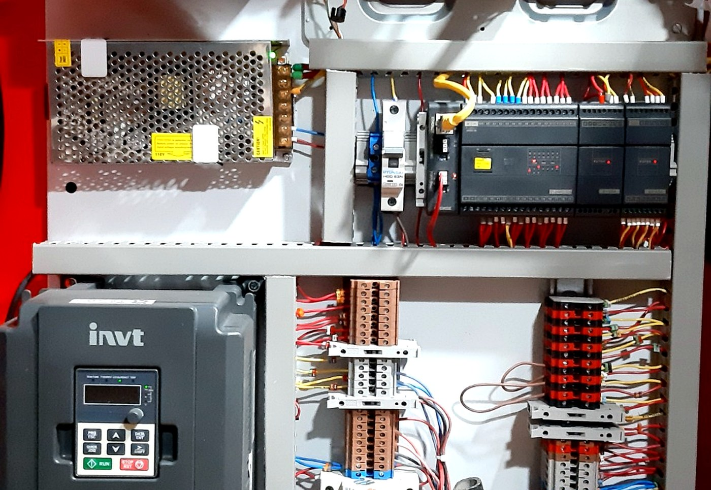

TAKSAM / Products / Details
Control Panels, Automation and SCADA/HMI Systems
تابلوهای کنترل، اتوماسیون و سیستمهای SCADA/HMI
PLC panels, HMI interfaces, SCADA screens, reporting systems, combustion-control logic, field instrumentation, and commissioning.
تابلوهای PLC، رابطهای HMI، صفحات SCADA، سیستمهای گزارشگیری، منطق کنترل احتراق، ابزار دقیق میدانی و راهاندازی.


